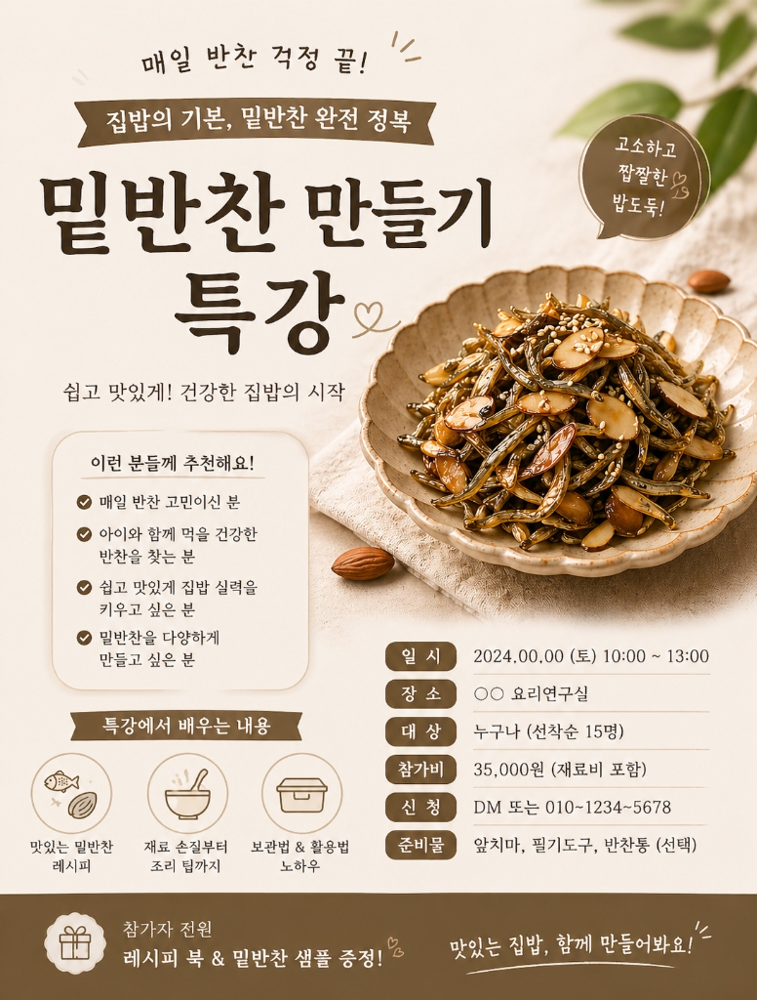
제주의 푸른 바다와 바람을 도화지 삼아 자란 제주도 소녀 양수연. 외동딸로 태어난 특권(?) 덕분일까요, 그녀는 태어나서 단 한 번도 '심심함'이라는 감정을 겪어본 적이 없습니다. 세상에는 호기심을 마구 자극하는 재밌는 일들이 발에 치이도록 무궁무진했거든요.
그렇게 세상의 온갖 재미를 탐구하며 평화롭게 유랑하던 어느 날, 운명처럼 '안티그래비티(Antigravity)'를 만나게 됩니다. 그리고 그날 이후... 세상에, 마치 합법적인 마약이라도 발견한 듯 그 짜릿한 매력에 퐁당 빠져 돌이킬 수 없는 지독한 중독의 길을 걷게 되었습니다. 지금 여러분이 보고 계신 이 미니멀한 공간은 바로 그 달콤한 중독이 만들어낸 아주 흥미로운 결과물입니다.
⚓ My Professional Roots & Status
제주 출신 특권 (Heritage Privilege)
- 사투리 통역 가능 및 귤 까기 실력 '국가대표급' 보유.
- 섬 소녀 특유의 탁 트인 시야와 남다른 회복탄력성 장착.
현재 근황 (Latest News)
- Location: 충남 천안 거주 (본격적인 육지 생활 적응 완료!)
- Status: 웨딩드레스 피팅만큼이나 치열하게 브랜드의 '핏(Fit)'을 맞추는 중인 예비 신부.
- Focus: 안티그래비티 중독 치료 거부 및 천안 호두과자만큼 알찬 콘텐츠 기획 중.
단 한 번도 심심해 본 적 없는 그녀의 '재미 탐구 궤적'은 결국 안티그래비티라는 무중력의 놀이터에 불시착했습니다. 이곳에 펼쳐진 작업물들은 결코 단순한 결과물이 아닙니다.
폭발하는 아이디어와 감출 수 없는 호기심을 안티그래비티의 짜릿한 마력(중독성 200% 보장)으로 빚어낸, 치열하고도 유쾌한 실험의 산물입니다. 지루함을 타파하는 저만의 문제 해결 방식이 어떻게 세련된 비주얼로 구현되는지 확인해 보세요.
Selected Works
01.
심플하고 정갈한 톤앤매너로 제작된 요리 레시피 카드 뉴스 디자인. 재료 준비부터 조리 단계별 가이드를 직관적인 인포그래픽 형태로 시각화하여 정보의 가독성과 요리 과정의 이해도를 극대화했습니다.
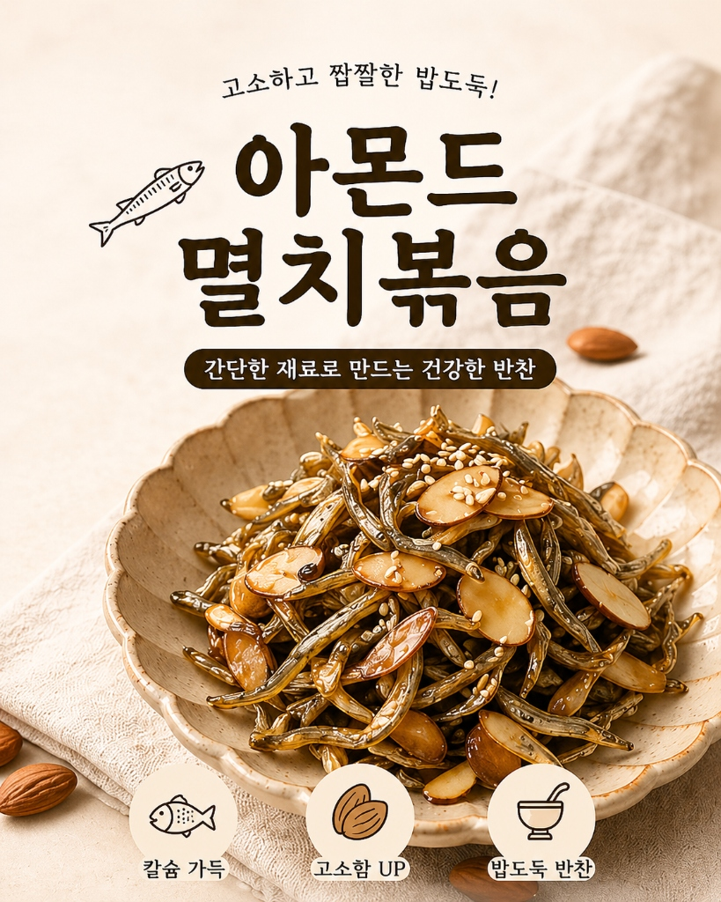
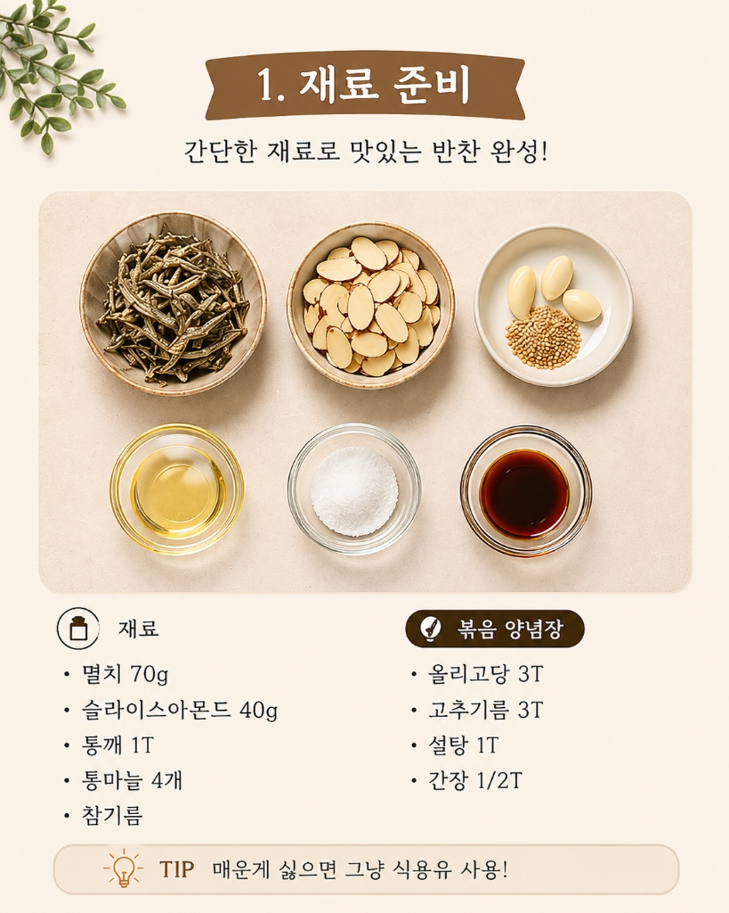
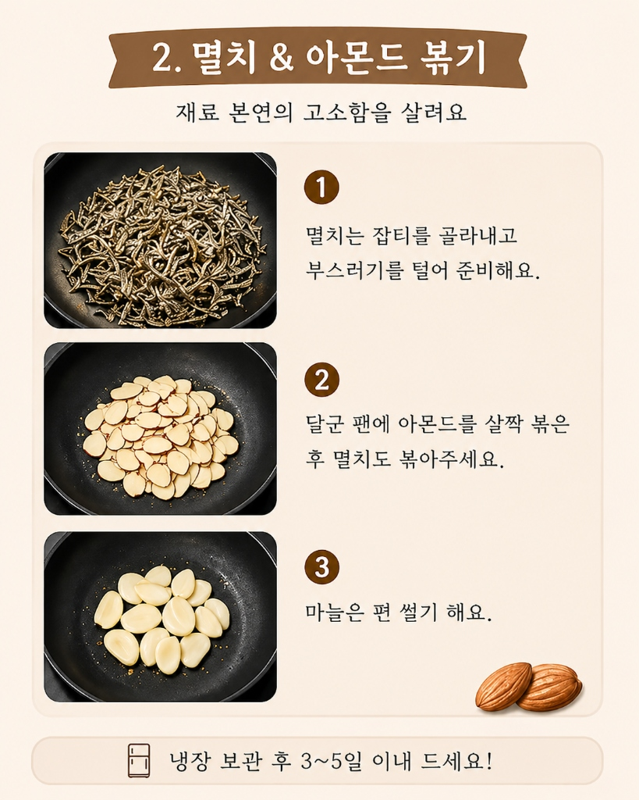
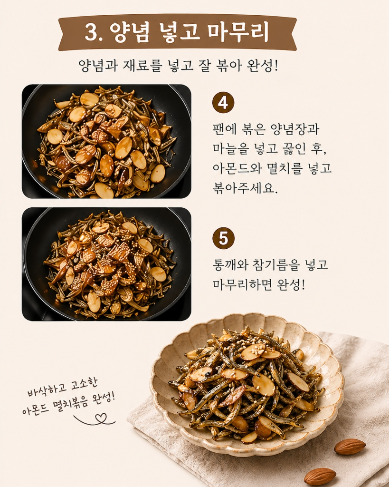
02.
쿠킹 스튜디오의 원데이 클래스 홍보를 위해 제작된 포스터 디자인. 정갈한 멸치볶음의 실사 요리와 명확한 타이포그래피 그리드를 입혀 클래스의 신뢰도와 대중성을 극대화했습니다.
03.
친환경 미니어처 세탁 마을을 콘셉트로 한 브랜드 광고 그래픽과 모션 비디오. 거대한 울샴푸 보틀을 3D 미니어처 환경 디오라마 속에 조화롭게 합성하고 화사한 파스텔 톤 보정을 거쳐 감각적인 동화풍 광고 비주얼과 광고 영상을 제작했습니다.
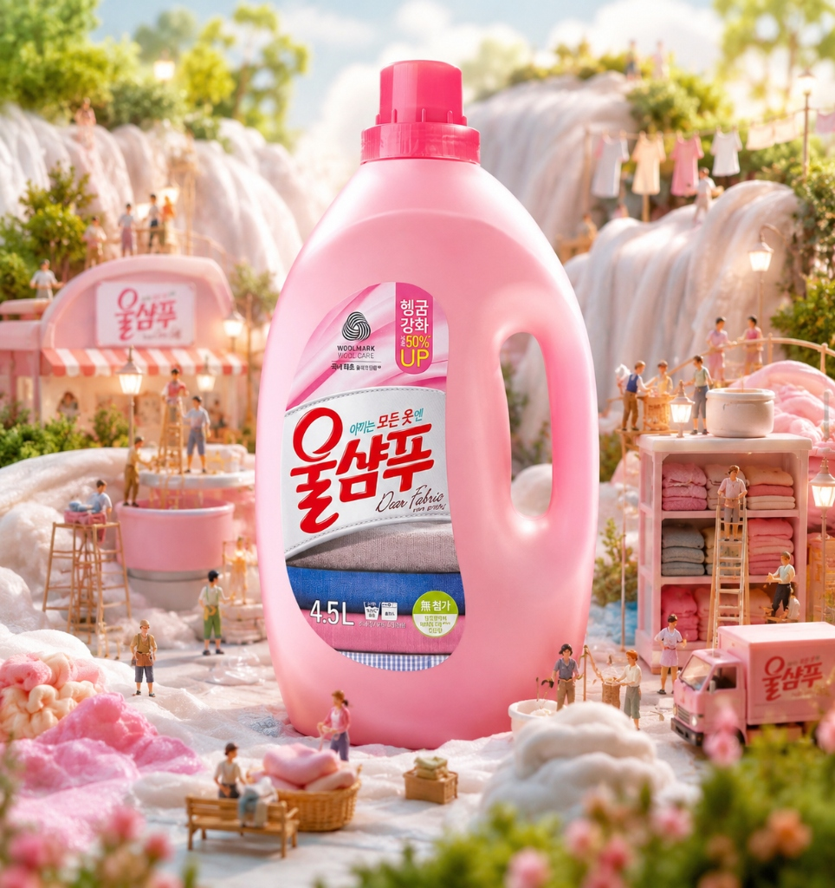
04.
볼이 빵빵하고 귀여운 아기 다람쥐 '토리'가 높은 곳에 대한 두려움을 극복하고 첫 비행에 성공하는 이야기를 담은 창작 동화책 프로젝트. 따뜻한 색감의 디지털 일러스트레이션과 감성적인 캐릭터 디자인으로 동심 어린 스토리를 시각화했습니다. 아래 카드를 클릭하면 본문 텍스트와 삽화를 동화책 읽듯 순서대로 확대 감상할 수 있습니다.
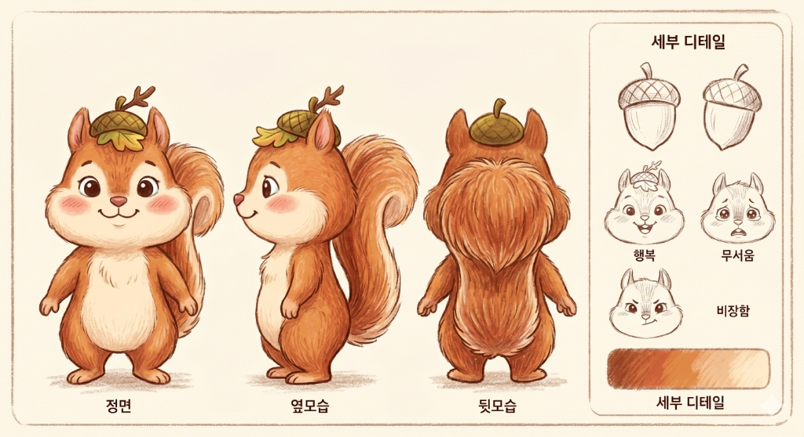
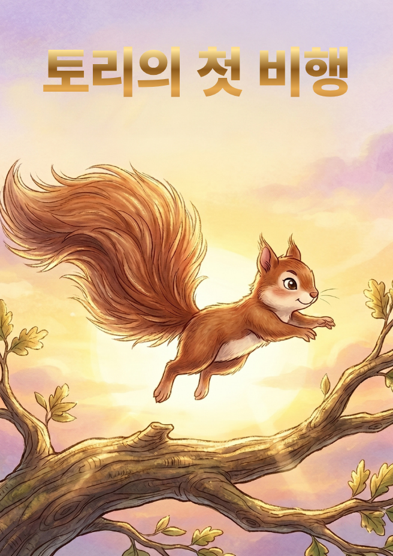
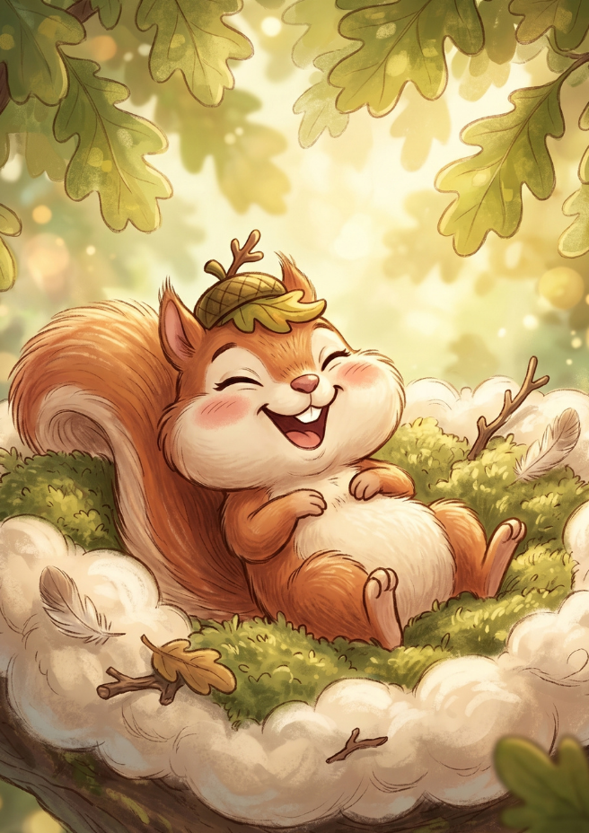
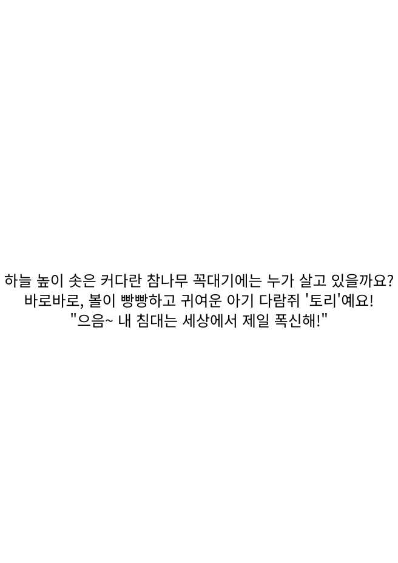
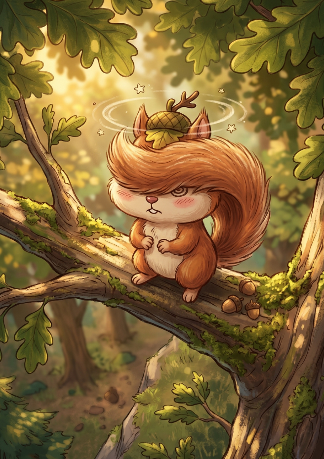
05.
MZ세대의 취향과 감성 문화를 공략하기 위한 폰케이스 브랜드의 모바일 콘텐츠 마케팅 기획 제안서. 시장 트렌드 분석, 타겟 페르소나 설정, 콘텐츠 기획 및 광고 성과 모델까지 총 11장으로 구성된 전략 제안서입니다. 아래 카드를 클릭하면 기획서를 순서대로 한 장씩 크게 확대하여 넘겨볼 수 있습니다.
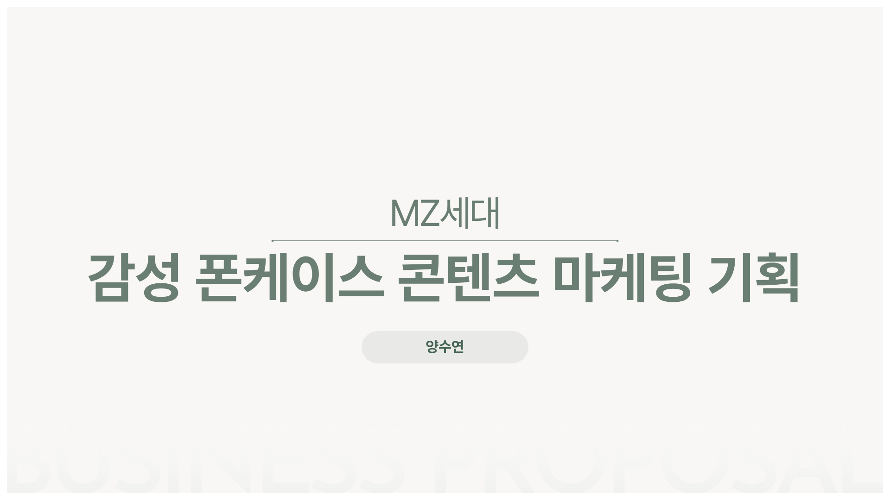
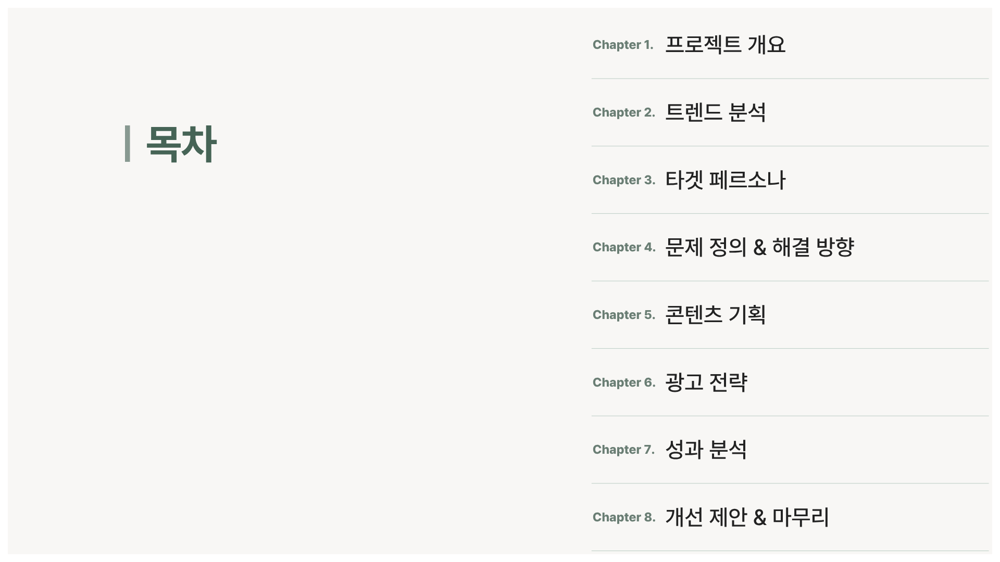
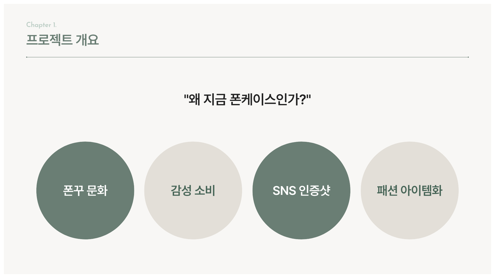
06.
어버이날 부모님과 함께 방문한 따뜻한 감성의 우드 톤 식당을 주제로 제작한 인스타그램 캐러셀 디자인. 4:5 화면 비율에 맞추어 감성적인 타이포그래피와 필터 질감을 더해 따뜻하고 차분한 무드를 연출했습니다. 각 카드를 클릭하면 상세 디자인을 크게 감상할 수 있습니다.
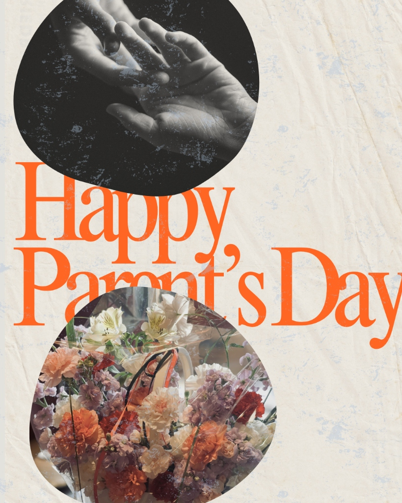
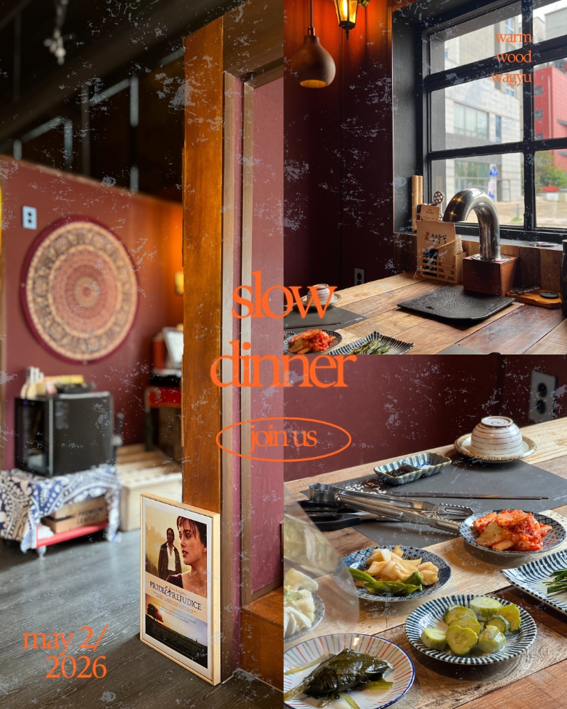
07.
자연의 숭고함과 그 속에서 묵묵히 걸어가는 아기 코끼리 '토토'의 여정을 잔잔하게 담아낸 다큐멘터리 영상 에세이. 감각적인 리듬의 컷 편집과 차분한 컬러 그레이딩(Color Grading)을 통해 시네마틱한 무드를 극대화했습니다.
Creative Journey
저의 작업 방식은 늘 이런 방식의 끊임없는 '재미 추구'에서 시작됩니다.
- — "이걸 이렇게 우주로 띄워보면 어떨까?" 하는 호기심 발동
- — 안티그래비티의 무한한 유연함을 핑계 삼아 상상력 구체화
- — 심심할 틈을 완벽히 차단하는 끝장 파고들기와 디테일 집착
- — 감각적 에스테틱과 짱짱한 논리(Logic)의 아슬아슬한 핏(Fit) 맞추기
가끔은 안티그래비티 코딩 창을 닫고, 세상을 향해 카메라 렌즈를 엽니다. 이곳은 제 일상 속 영감과 추억들이 파편처럼 흩뿌려진 시각적 앨범입니다.
제주 소녀 특유의 자유로운 감성과 중독자가 세상을 바라보는 엉뚱한 시선이 생생하게 담겨 있습니다. 때로는 길게 적은 텍스트보다 찰나에 찍힌 사진 한 장이 제 현재의 재미와 기분을 가장 완벽하게 대변하곤 하니까요.